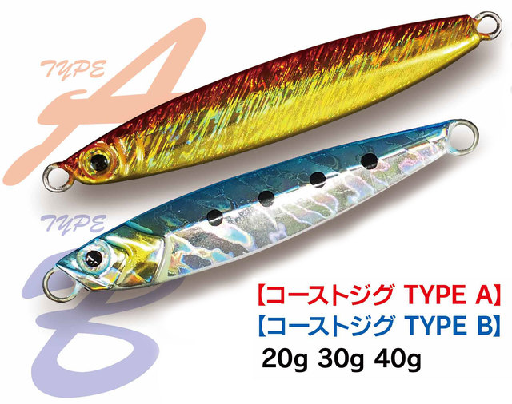
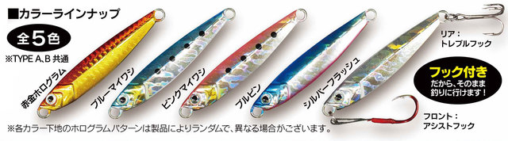
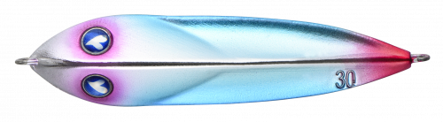

コーストジグ
（Coast Jig）
コーストジグ（Coast Jig）は上州屋オリジナルブランド、UNIFIXのメタルジグです。
青物を中心にショアジギングの対象魚を幅広く狙えるベーシックなジグで、フロントのアシストフックとリアのトレブルフックが最初から付いているので、買ってすぐ投げられるのが魅力です。

画像出典:上州屋公式HP
スペック
- メーカー
- 上州屋（UNIFIX）
- タイプ
- メタルジグ（TYPE A／TYPE B）
- 重さ
- 20g／30g／40g
- フック
- フロント：アシストフック／リア：トレブルフック（付属）
- カラー
- 全5色（TYPE A・B共通）
- ターゲット
- 青物・サワラなどショアジギング対象魚
- 価格
- 480円（税抜・発売当時）
- 発売
- 2020年8月
▼今すぐチェック
コーストジグの特徴
スイミングもフォールも安定した、フック付きの万能キャスティングジグ
-
遠投重視のTYPE Aとフォール重視のTYPE B
TYPE Aはやや後方寄りの重心で遠投性能を重視。TYPE Bはセンターバランスでフォールを重視している。同じ重さでも狙い方に合わせて選べる。
-
最初からフック付き
フロントにアシストフック、リアにトレブルフックが付いた状態で販売されている。フックを別に買わなくても、そのまま釣りを始められる。
-
シーバスロッドでも投げやすい重さ
一般的なシーバスロッドでも投げやすい20g・30gと、ショアジギングで多用する40gをラインナップ。これからショアジギングを始める人にも揃えやすいジグだ。
コーストジグの使い方
基本は遠投して着底させ、ただ巻きとジャークで探ります。
青物にはワンピッチジャークで誘い、途中でフォールを入れて食わせの間を作るのが定番の組み立てです。サワラやサゴシには速めのただ巻きも試してみましょう。ジャークとただ巻きを織り交ぜて、その日に反応するスピードを探っていきます。
コーストジグの得意な状況
堤防やサーフから、青物やサワラなどの回遊魚を狙う場面が主な出番です。
ベイトが見えない時でも、遠投して広く探れるジグは最初の1本に向いています。
スイミングとフォールの両方で誘えるので、回遊のタイミングで釣れるチャンスを逃しにくいジグです。
ワンポイント
手頃な価格なので、根掛かりしやすいボトム付近も思い切って探れます。
リアのトレブルフックは潮で傷みやすいので、釣行後に真水で洗い、サビが出たら早めに交換しましょう。
コーストジグの使い分け
| タイプ | 特徴 | 得意な場面 |
|---|---|---|
| TYPE A | やや後方寄りの重心 | 遠投して広く探りたい時に |
| TYPE B | センターバランス | フォールで食わせたい時に |
TYPE A・Bとも20g・30g・40gの3サイズです。シーバスロッドで使うなら20g・30g、ショアジギングロッドなら40gが目安です。
人気カラー
コーストジグは全5色展開で、カラーはTYPE A・B共通です。人気カラーを紹介します。

- 赤金ホログラム：濁りがある時や朝夕のマヅメに強いアカキンカラー。
- ブルーイワシ：青物が好んで捕食するイワシをイメージしたカラー。
- ピンクイワシ：青物が反応するピンク系のショアジグ定番カラー。
- ブルピン：ブルーとピンクがアクションで交互に煌めくカラー。
- シルバーフラッシュ：自然光をよく反射する、ナチュラルかつ高アピールなカラー。
画像出典:上州屋公式HP
▼今すぐチェック
コーストジグに似ているルアー
-
 サムライジグR スピン
ダイワ
詳細はこちら＞
サムライジグR スピン
ダイワ
詳細はこちら＞
コンパクトなボディに小型ブレードを備えたブレードジグ。超早巻きに対応し、サワラ・サゴシ・青物・根魚を狙える。
-
 ジグパラショート
メジャークラフト
詳細はこちら＞
ジグパラショート
メジャークラフト
詳細はこちら＞
青物・サワラ・タチウオ・ヒラメ・根魚などを幅広く狙えるメタルジグ。
-

シーライド ブルーブルー 詳細はこちら＞青物・シーバス・ヒラメ・マダイほかを狙えるメタルジグ。動きの違いでローテーションしやすい。